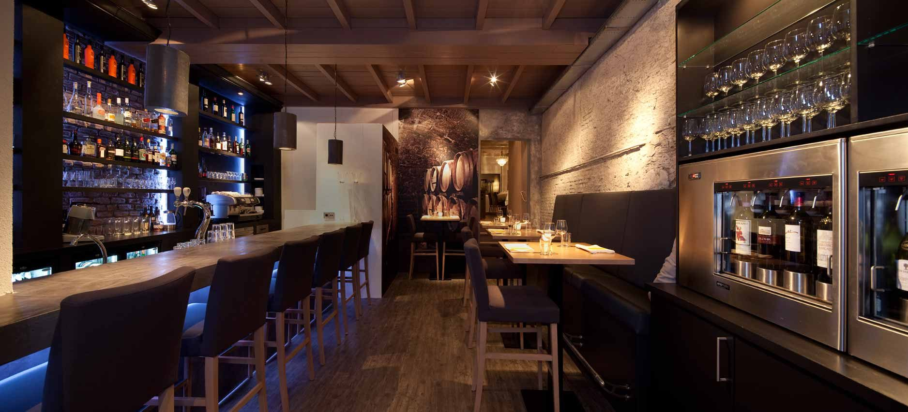
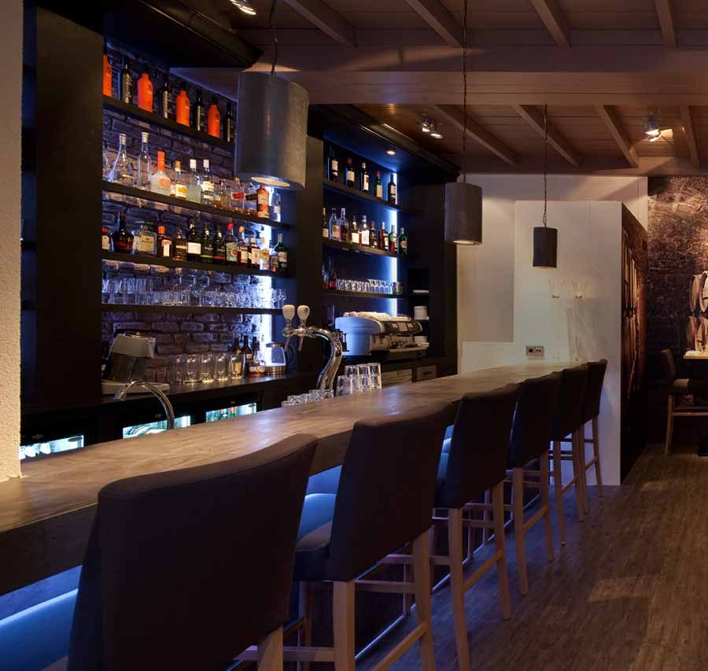
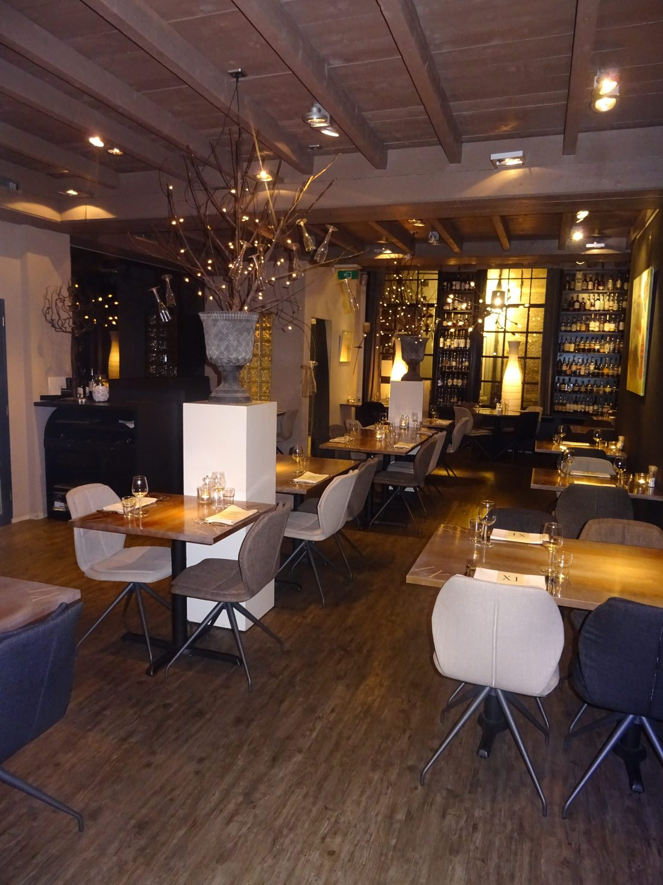

Whiskydiner
Zeven gangen, bij elke gang een bijpassende whisky. Van Islay tot Kentucky.

Ruim 130 whisk(e)y's en 20 grappa's
Geen tijd voor zeven gangen? Onze whisk(e)y- en grappakaart ligt elke avond klaar. Na het diner, of aan de bar.
130+ whisk(e)y'swhisky én whiskey
20 grappa'sna het diner

Zo reserveert u
Bel ons of stuur een aanvraag met de datum en het aantal personen, minimaal één dag van tevoren.
Met een groep? Voor gezelschappen tot 18 personen hebben we een aparte ruimte.
Reserveren
Bel ons of stuur een aanvraag. We bevestigen uw reservering zo snel mogelijk.
Liever even bellen?
Voor een tafel, een gezelschap of een overnachting.
Woensdag t/m zaterdag, keuken open vanaf 17.30 uur. Zondag, maandag en dinsdag gesloten.
Parkeren: Oostwal (bij de bibliotheek), dan 200 meter lopen via de Pijntorenstraat.
Parkeren: Oostwal (bij de bibliotheek), dan 200 meter lopen via de Pijntorenstraat.